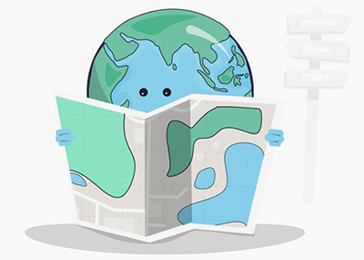

Karten lesen
 |
Karten zeigen dir oft nur bestimmte Merkmale oder Themen und nicht immer die ganze Wirklichkeit. Wenn du Karten kritisch betrachtest, kannst du erkennen, aus welchen Ebenen sie bestehen und welche Informationen sie dir mitteilen sollen. Außerdem kannst du verstehen, welche Absichten oder möglichen Verzerrungen dahinterstecken und wie die Karten im jeweiligen Zusammenhang genutzt werden.
|
Geografische Karten sind wichtige Werkzeuge, um die Welt um uns herum zu verstehen. Sie werden nach Inhalt, Maßstab, Zweck und räumlichem klassifiziert. Jede Art von Karte hat ihren eigenen Nutzen und hilft uns, die Erde besser zu erforschen und zu verstehen.